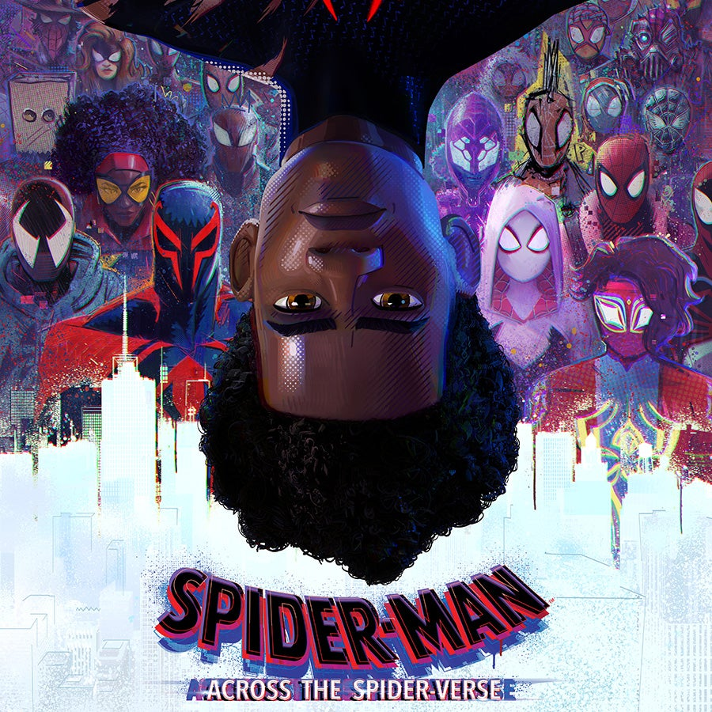

Cars
The movie is great to look at and a lot of fun, but somehow lacks the extra push of the other Pixar films. Maybe that's because there's less at stake here, and no child-surrogate to identify with.
I wonder if the movie's primary audience, which skews young, will much care about the 1950s and its cars. Maybe they will.
Of all decades, the 1950s seems to have the most staying power; like Archie and Jughead, the decade stays forever young, perhaps because that's when modern teenagers were invented.

Where To Watch?
- Disney+
- Google Play Movies
- Vudu
Overall Rating
Cars Trailer
Spider-Man: Across The Spider-Verse
Is it possible to equal a film as boundlessly inventive, stylistically bold and effortlessly cool as Spider-Man: Into the Spider-Verse? Could a sequel ever match that film's freshness, energy and visual verve? The answer, it seems, is an emphatic yes. Spider-Man: Across the Spider-Verse is sublime. There's not a frame of this rich, kaleidoscopically detailed animation that isn't dazzling. It takes the basic themes of the first film - adolescent isolation, communication breakdown, the messy, stressful business of growing, of finding your people - and builds whole worlds with them. It's a dizzying onslaught of ideas and graphic references. It has heart. It even has a font gag.
In the film-making team and in the story there's a pleasing combination of original talent and fresh blood. Phil Lord and Christopher Miller return as writers and producers, but there's a new directing team that includes Kemp Powers (Pixar's Soul). Once again, the story focuses on the bond between fellow Spider-people Miles Morales (Shameik Moore) and Gwen Stacy (Hailee Steinfeld). But there is a host of new characters, each with their own distinctive look, including Hobie (Daniel Kaluuya), a spider-punk anarchist, drawn with a graphic style that borrows from Jamie Reid's Sex Pistols aesthetic and Jamie Hewlett's Gorillaz.
It's densely plotted, almost overwhelming at times; Daniel Pemberton's score is an Escher staircase of anxiety. But the soul of the film lies in the tiny human details: like the way Miles, about to gain access to an inner Spider-circle, bounces lightly on his toes - still, at heart, an excited kid waiting for a treat.

Where To Watch?
- Netflix
- Apple Tv
- Google Play Movies
Overall Rating
Spider-Man: Across The Spider-Verse Trailer
Toy Story
Seeing "Toy Story," I felt some of the same exhilaration I felt during "Who Framed Roger Rabbit." Both movies take apart the universe of cinematic visuals, and put it back together again, allowing us to see in a new way.
"Toy Story" is not as inventive in its plotting or as clever in its wit as "Rabbit" or such Disney animated films as "Beauty and the Beast"; it's pretty much a buddy movie transplanted to new terrain. Its best pleasures are for the eyes.
But what pleasures they are! Watching the film, I felt I was in at the dawn of a new era of movie animation, which draws on the best of cartoons and reality, creating a world somewhere in between, where space not only bends but snaps, crackles and pops.

Where To Watch?
- Disney+
- Vudu
- Google Play Movies
Overall Rating
Toy Story Trailer
WALL•E
What's more, I don't think I've quite captured the film's enchanting storytelling. Directed and co-written by Andrew Stanton, who wrote and directed “Finding Nemo,” it involves ideas, not simply mindless scenarios involving characters karate-kicking each other into high-angle shots.
It involves a little work on the part of the audience, and a little thought, and might be especially stimulating to younger viewers. This story told in a different style and with a realistic look could have been a great science-fiction film. For that matter, maybe it is.

Where To Watch?
- Disney+
- Apple Tv
- Prime Video
Overall Rating
WALL•E Trailer